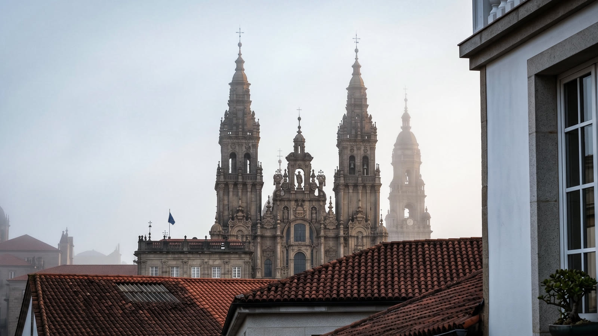
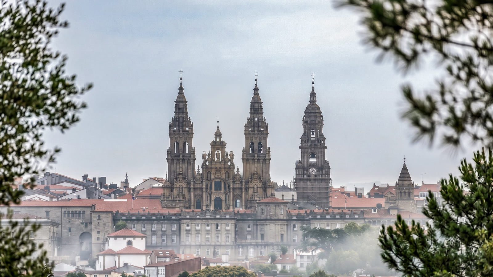
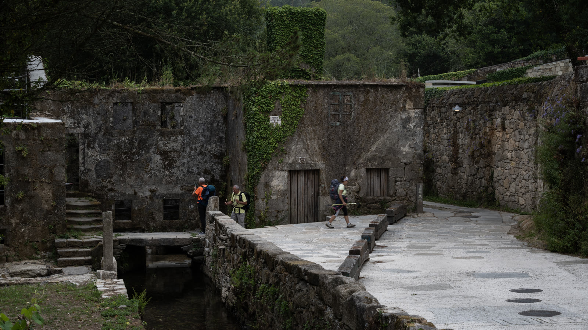
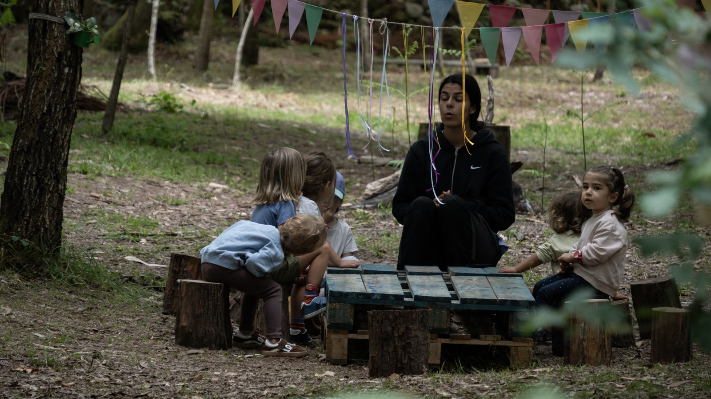
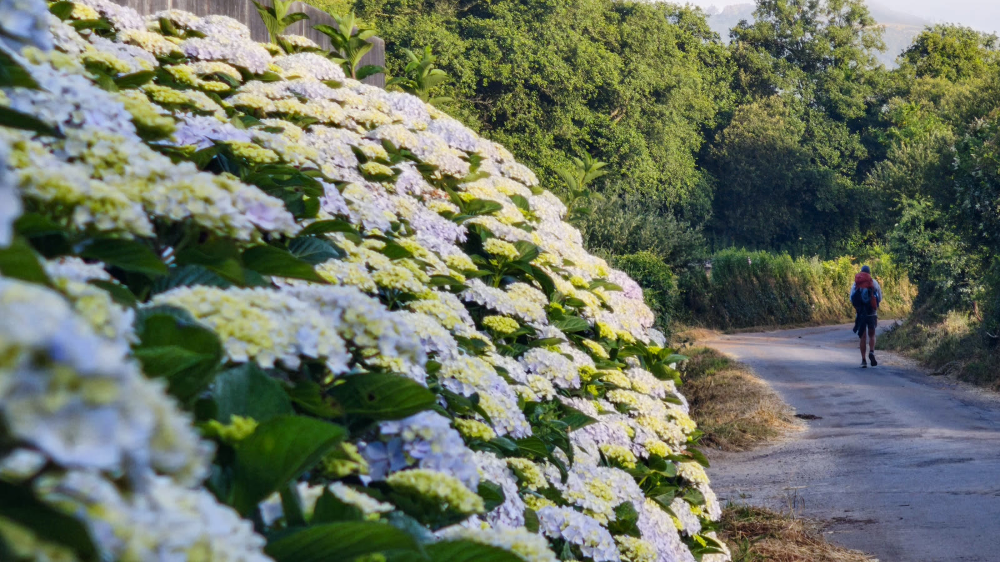
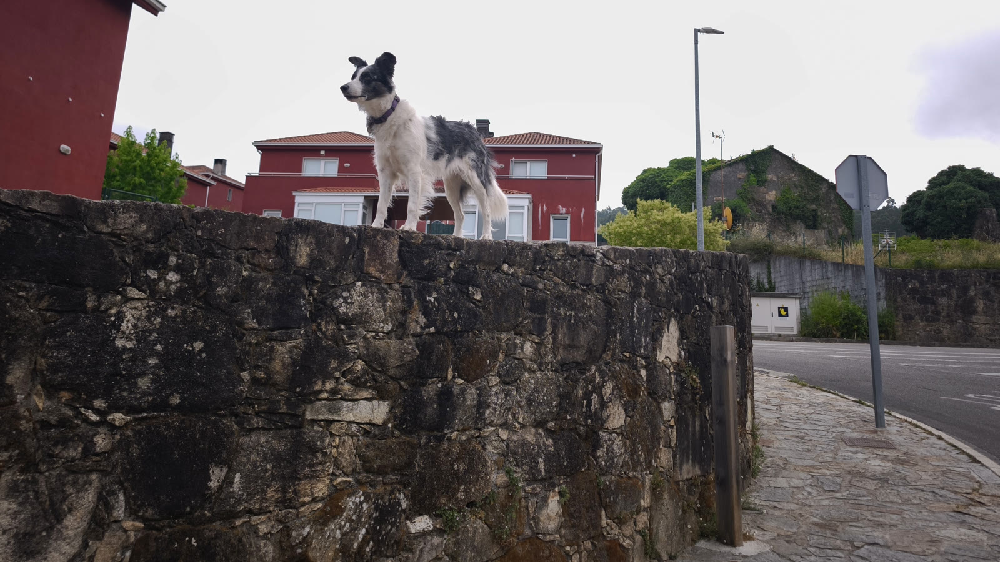
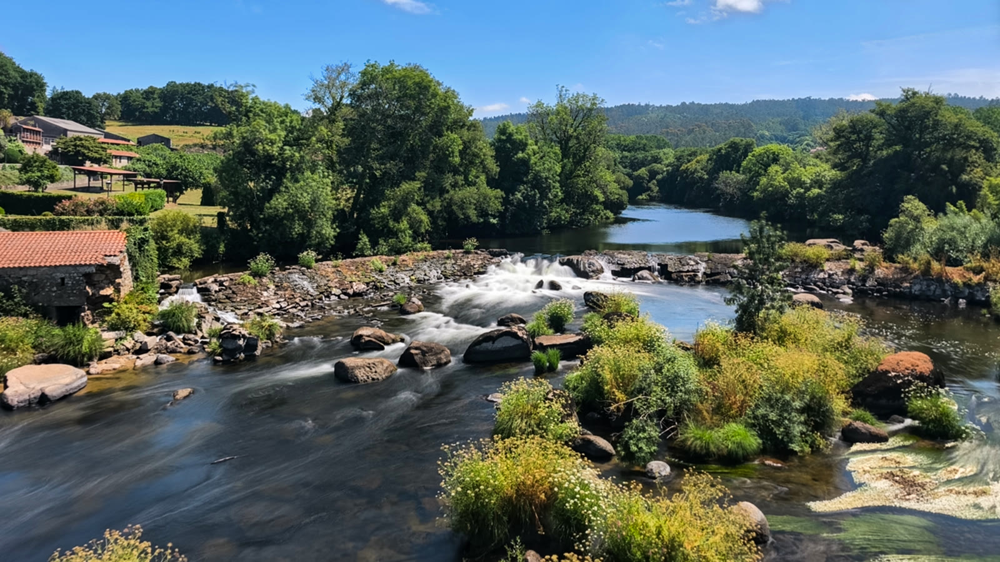
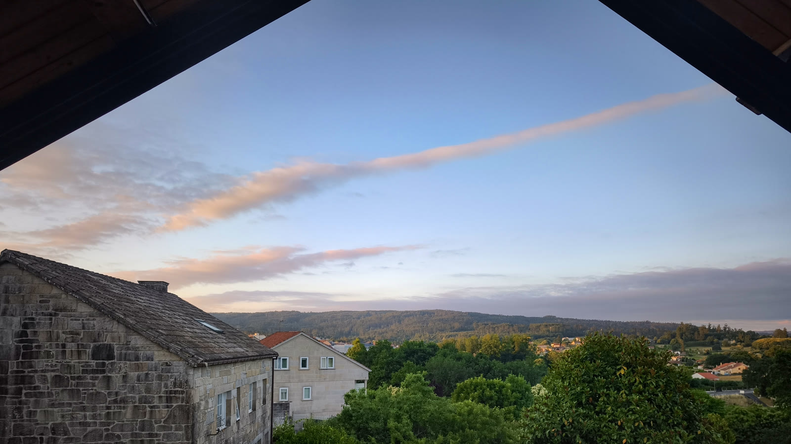
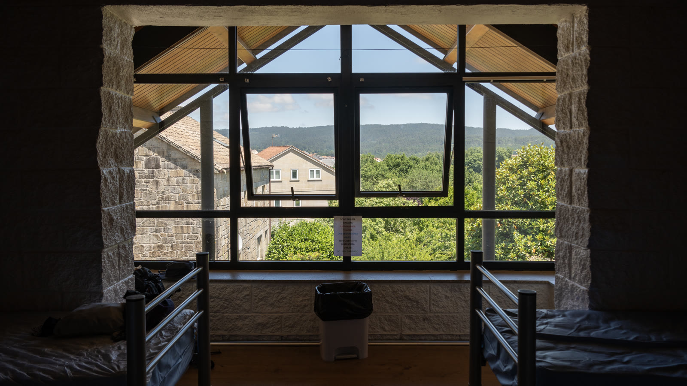

Day 30｜Negreira、離開聖城、熟悉的寧靜
2026 年 6 月 19 日 · Santiago → Negreira · 22km
朝聖之路第 30 天！聖地牙哥的早晨，被厚厚的迷霧籠罩著。但這裡還不是終點——我們背起行囊，繼續走向「世界盡頭」。

遠離聖城的熱鬧，人潮退去，只剩下寧靜。回頭望，大教堂的雙塔浮在霧裡——眼前的風景，感覺一切又回到了出發時的起點。


畫面裡我們在幹嘛？拆樹枝當拐杖！後來認識的同行女孩是中國徒步老手，背包不到五公斤，每天都是第一個抵達庇護所。但最後幾天脛骨發炎，痛到得看醫生。為了讓她減輕腳的負擔，只好就地取材。這條路，從來不是比誰快——找到自己的舒適節奏，不受傷才是重點。
途經森林深處，遇見一群正在上課的孩子——大自然就是最棒的教室。


哇，這隻邊牧不怕高，站在石牆上好可愛——下一秒瞬間被牠的咆哮嚇歪！

翻過漫長的上坡，迎接我們的是壯麗的 Ponte Maceira：中世紀石橋橫跨清澈的河川，美得太不真實。配上一杯冰涼啤酒——這才是朝聖之路該有的節奏。


回到安靜的小鎮與綠色丘陵，這份寧靜感真好。廣場上的移民紀念碑訴說著選擇：是毅然前行，還是被不捨挽留？來到庇護所，超幸運搶到靠窗的好床位！看著窗外專屬加利西亞的綠意，不需要多餘的聲音，這樣的平靜剛剛好。


📚 朝聖者小百科：Ponte Maceira
馬塞拉橋（Ponte Maceira）是加利西亞最美的中世紀小鎮之一，石橋橫跨 Tambre 河，過去是朝聖者前往 Fisterra 的必經之路。橋邊的 Bar 是公認的休息點——走累了，就在河邊喝一杯吧。
從 Santiago 出發，朝聖之路在這裡分出「世界盡頭延伸段」：先到象徵死亡與告別的 Fisterra，再到象徵洗滌與重生的 Muxía，全程約 90 公里，多數人走 3 到 4 天。
🍺 Ponte Maceira 河邊 Bar：中世紀石橋配冰啤酒，懂喝
🥾 Santiago → Negreira 約 22km，出城後補給少，水先裝滿
| 住宿 | €15.0 |
| 中餐 Bar | €15.7 |
| 晚餐朝聖者餐 | €13.0 |
| 飲料、調酒 | €4.0 |
| 合計 | €47.7 |
🎬 對應 Vlog EP8｜比聖地牙哥更震撼！徒步前往世界盡頭Fisterra，0KM石碑與大西洋日落